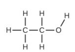
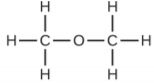

1. Los materiales de partida consisten en una esfera verde y dos esferas moradas. Los productos consisten en dos esferas verdes y dos esferas púrpuras. Esto viola el postulado de Dalton de que los átomos no se crean durante un cambio químico, sino que simplemente se redistribuyen.
3. Esta declaración viola el cuarto postulado de Dalton: en un compuesto dado, el número de átomos de cada tipo (y
así también el porcentaje) siempre tienen la misma proporción.
5. Dalton originalmente pensó que todos los átomos de un elemento en particular tenían propiedades idénticas, incluida la masa. Por lo tanto, el concepto de isótopos, en el que un elemento tiene masas diferentes, fue una violación de la idea original. Para explicar la existencia de isótopos, el segundo postulado de su teoría atómica se modificó para afirmar que los átomos del mismo elemento deben tener propiedades químicas idénticas.
7. Ambas son partículas subatómicas que residen en el núcleo de un átomo. Ambos tienen aproximadamente la misma masa. Los protones están cargados positivamente, mientras que los neutrones no están cargados.
9. (a) El átomo de Rutherford tiene un núcleo pequeño, cargado positivamente, por lo que la mayoría de las partículas α pasarán a través del espacio vacío lejos del núcleo y no se desviarán. Las partículas αque pasan cerca del núcleo se desviarán de sus caminos debido a la repulsión positiva-positiva. Cuanto más directamente hacia el núcleo se dirigen las partículas α, más cuanto mayor sea el ángulo de desviación será. (b) Las partículas α de mayor energía que pasan cerca del núcleo seguirán sufriendo deflexión, pero cuanto más rápido viajen, menor será el ángulo de desviación esperado. (c) Si el núcleo es más pequeño, la carga positiva es más pequeña y las deflexiones esperadas son más pequeñas, tanto en términos de qué tan cerca pasan las partículas α por el núcleo sin desviar y el ángulo de desviación. Si el núcleo es más grande, la carga positiva es más grande y las deflexiones esperadas son más grandes: se desviarán más partículas α y los ángulos de desviación serán más grandes. (d) Las rutas seguidas por las partículas α coinciden con las predicciones de (a), (b) y (c).
11. (a) 133Cs+; (b) 127I-; (c) 31P3-; (d) 57Co3+
13. (a) Carbono-12, 12C; (b) Este átomo contiene seis protones y seis neutrones. Hay seis electrones en un átomo neutro de 12C. La carga neta de dicho átomo neutro es cero y el número de masa es 12. (c) Las respuestas anteriores son correctas. (d) El átomo será estable ya que C-12 es un isótopo estable de carbono. (e) La respuesta anterior es correcta. Otras respuestas para este ejercicio son posibles si se elige un elemento diferente del isótopo.
15. (a) El litio-6 contiene tres protones, tres neutrones y tres electrones. El símbolo del isótopo es 6Li ó 36Li.
(b) 6Li+ ó 36Li+
17. (a) Hierro, 26 protones, 24 electrones y 32 neutrones
(b) yodo, 53 protones, 54 electrones y 74 neutrones.
19. (a) 3 protones, 3 electrones, 4 neutrones;
(b) 52 protones, 52 electrones, 73 neutrones
(c) 47 protones, 47 electrones, 62 neutrones
(d) 7 protones, 7 electrones, 8 neutrones
(e) 15 protones, 15 electrones, 16 neutrones
21. Usa el neón como ejemplo. Como hay tres isótopos, no hay forma de predecir con precisión las abundancias para hacer un total de 20.18 uma de masa atómica promedio. Supongamos que las abundancias son 9% Ne-22, 91% Ne-20 y solo un rastro de Ne-21. La masa promedio sería de 20.18 uma. La comprobación de la mezcla de isótopos de la naturaleza muestra que las abundancias son 90.48% Ne-20, 9.25% Ne-22 y 0.27% Ne-21, por lo que nuestras cantidades estimadas deben ajustarse ligeramente.
23. 79.90 uma
25. Fuente de Turquía: 26.49% (de 10.0129 isótopo en uma); Fuente estadounidense: 25.37% (de 10.0129 isótopo en uma).
27. El símbolo para el elemento oxígeno, O, representa tanto el elemento como un átomo de oxígeno. Una molécula de oxígeno, O 2, contiene dos átomos de oxígeno; El subíndice 2 en la fórmula debe usarse para distinguir la molécula diatómica de dos átomos de oxígeno individuales.
29.(a) molecular CO2, empirica CO2
(b) molecular C2H2, empirica CH
(c) molecular C2H4, empirica CH2
(d) molecular H2SO4, empirica H2SO4
31.(a) C4H5N2O
(b) C12H22O11
(c) HO
(d) CH2O
(e) C3H4O3
33.
(a) CH2O
(b) C2H4O
35.
(a) etanol

(b) metoximetano, más comúnmente conocido como dimetil éter

(c) Estas moléculas tienen la misma composición química (tipos y número de átomos) pero diferentes sustancias químicas
estructuras.Son isómeros estructurales.
37. (a) metal, metal de transición interior
(b) elemento no metálico, representativo
(c) metal, elemento representativo
(d) elemento no metálico, representativo
(e) metal, metal de transición
(f) metal, metal de transición interior
(g) metal, metal de transición
(h) elemento no metálico, representativo
(i) elemento no metálico, representativo
(j) metal, elemento representativo
39.
(a) He
(b) Be
(c) Li
(d) O
41.
(a) criptón, Kr
(b) calcio, Ca
(c) flúor, F
(d) telurio, Te
43.
(a) 1123Na
(b) 29541Xe;(c) 3373As
(c) 88226Ra
45. Iónico: KCl, MgCl2; Covalente: NCl3, ICl, PCl5, CCl4
47.
(a) covalente
(b) iónico, Ba2+, O2-
(c) iónico, NH4+, CO32-
(d) iónico, Sr2+, H2PO4-
(e) covalente
(f) iónico, Na+, O2-
49.
(a) CaS
(b) (NH4)2SO4
(c) AlBr3
(d) Na2HPO4
(e) Mg3 (PO4)2
51.
(a) cloruro de cesio (b) óxido de bario
(c) sulfuro de potasio
(d) cloruro de berilio
(e) bromuro de hidrógeno
(f) fluoruro de aluminio
53.
(a) RbBr
(b) MgSe
(c) Na2O
(d) CaCl2
(e) HF
(f) GaP
(g) AlBr3
(h) (NH4)2SO4
55.
(a) ClO2
(b) N2O4
(c) K3P
(d) Ag2S
(e) AIF3·3H2O
(f) SiO2
57.
(a) óxido de cromo (III)
(b) cloruro de hierro (II)
(c) óxido de cromo (VI)
(d) cloruro de titanio (IV)
(e) cobalto (II)
cloruro de hexahidrato
(f) sulfuro de molibdeno (IV)
59.
(a) K3PO4
(b) CuSO4
(c) CaCl2
(d) TiO2
(e) NH4NO3
(f) NaHSO4
61.
(a) óxido de manganeso (IV)
(b) cloruro de mercurio (I)
(c) nitrato de hierro (III)
(d) cloruro de titanio (IV)
(e) cobre (II)
bromuro